코드
knitr::include_graphics("data/math/2교시_수학영역_문제지.pdf")수능수학 (2023)
데이터 과학자 학부모입장에서 챗GPT시대 수학능력평가 수학문제를 풀어보자.
한국교육과정평가원에서 대학수학능력시험을 주관한다. 가장 최근에 실시된 수학능력평가시험지를 살펴보면 다음과 같다.
2023학년도 대학수학능력시험 문제지 중에서 수학영역 PDF를 다운로드 받으면 다음과 같이 확인이 가능하다.
정답지도 함께 제공되어 각문제에 대한 정답도 확인가능하다.
기계판독 가능한 형태로 작업을 해야만 챗GPT를 활용하여 문제를 풀 수 있다. 이를 위해서 다양한 도구를 사용하여 작업을 수행한다.
파이썬 tabula 패키지를 사용하여 PDF 파일에서 텍스트를 표형태로 된 데이터를 추출한다.
import pandas as pd
import tabula
answer_file = "data/math/2교시_수학영역_정답표.pdf"
answer = tabula.read_pdf(answer_file, pages='all')
#> Got stderr: 6월 07, 2023 12:59:58 오후 org.apache.pdfbox.pdmodel.font.PDType0Font toUnicode
#> 경고: No Unicode mapping for CID+24813 (24813) in font *ÇѾç½Å¸íÁ¶-Identity-H
#> 6월 07, 2023 12:59:58 오후 org.apache.pdfbox.pdmodel.font.PDType0Font toUnicode
#> 경고: No Unicode mapping for CID+29678 (29678) in font *ÇѾç½Å¸íÁ¶-Identity-H
#> 6월 07, 2023 12:59:58 오후 org.apache.pdfbox.pdmodel.font.PDType0Font toUnicode
#> 경고: No Unicode mapping for CID+30190 (30190) in font *ÇѾç½Å¸íÁ¶-Identity-H
#> 6월 07, 2023 12:59:58 오후 org.apache.pdfbox.pdmodel.font.PDType0Font toUnicode
#> 경고: No Unicode mapping for CID+30205 (30205) in font *ÇѾç½Å¸íÁ¶-Identity-H
#> 6월 07, 2023 12:59:59 오후 org.apache.pdfbox.pdmodel.font.PDType0Font toUnicode
#> 경고: No Unicode mapping for CID+24813 (24813) in font *ÇѾç½Å¸íÁ¶-Identity-H
#> 6월 07, 2023 12:59:59 오후 org.apache.pdfbox.pdmodel.font.PDType0Font toUnicode
#> 경고: No Unicode mapping for CID+29678 (29678) in font *ÇѾç½Å¸íÁ¶-Identity-H
#> 6월 07, 2023 12:59:59 오후 org.apache.pdfbox.pdmodel.font.PDType0Font toUnicode
#> 경고: No Unicode mapping for CID+30190 (30190) in font *ÇѾç½Å¸íÁ¶-Identity-H
#> 6월 07, 2023 12:59:59 오후 org.apache.pdfbox.pdmodel.font.PDType0Font toUnicode
#> 경고: No Unicode mapping for CID+30205 (30205) in font *ÇѾç½Å¸íÁ¶-Identity-H파이썬 tabula 패키지로 추출한 데이터표를 R에서 데이터 전처리 작업을 수행한다.
library(tidyverse)
library(reticulate)
library(gt)
odd_1 <- py$answer[[1]] %>%
janitor::clean_names(ascii = FALSE) %>%
select(1:3) %>%
set_names(c("문항번호", "정답", "배점")) %>%
mutate(구분 = "공통") %>%
mutate_all(.funs=as.character)
odd_2 <- py$answer[[1]] %>%
janitor::clean_names(ascii = FALSE) %>%
select(4:6) %>%
set_names(c("문항번호", "정답", "배점")) %>%
mutate(구분 = "공통") %>%
mutate_all(.funs=as.character)
odd_3 <- py$answer[[1]] %>%
janitor::clean_names(ascii = FALSE) %>%
select(7:9) %>%
set_names(c("문항번호", "정답", "배점")) %>%
mutate(구분 = "확통") %>%
mutate_all(.funs=as.character)
odd_4 <- py$answer[[1]] %>%
janitor::clean_names(ascii = FALSE) %>%
select(10:12) %>%
set_names(c("문항번호", "정답", "배점")) %>%
mutate(구분 = "미적") %>%
mutate_all(.funs=as.character)
odd_5 <- py$answer[[1]] %>%
janitor::clean_names(ascii = FALSE) %>%
select(13:15) %>%
set_names(c("문항번호", "정답", "배점")) %>%
mutate(구분 = "기하") %>%
mutate_all(.funs=as.character)
odd_tbl <- bind_rows(odd_1, odd_2) %>%
bind_rows(odd_3) %>%
bind_rows(odd_4) %>%
filter(str_detect(문항번호, "\\d"))
odd_tbl %>%
gt::gt() %>%
cols_align("center") %>%
# gtExtras::gt_theme_538() %>%
opt_interactive(
use_search = TRUE,
use_filters = TRUE,
use_resizers = TRUE,
use_highlight = TRUE,
use_compact_mode = TRUE,
use_text_wrapping = FALSE,
use_page_size_select = TRUE
)\(\LaTeX\)으로 작성된 .tex 파일을 .md 파일로 쉽게 변환시킬 수 있다.
2023학년도 대학수학능력시험 문제지 수학문제 홀수형 1번 문제를 추출해보자.
한 문항을 확장하여 전체문제를 기계판독해보자. 먼저 파이썬에서 텍스트 문제를 불러 전처리 작업을 수행한다.
import pandas as pd
import re
# Read the lines of the file
with open("data/math/2교시_수학영역_문제지/2교시_수학영역_문제지.md", 'r') as f:
problems = f.readlines()
# Combine the lines into a single string
problems_txt = ' '.join(problems)
# Split the string on "짝수형"
problems_split = re.split('짝수형', problems_txt, maxsplit=1)
# Get the first part of the split (equivalent to problems_split[1] in R)
problem_odd_raw = problems_split[0]
split_text = re.split(r"(?=\b\d+\.\s)", problem_odd_raw)
# for i, segment in enumerate(split_text):
# print(f"Segment {i}:\n{segment}\n-----")
# split_text_as_string = '\n'.join(split_text)
#
# # Write the string to a text file
# with open('data/math_problems.txt', 'w') as f:
# f.write(split_text_as_string)# problems_py <- read_lines('data/math_problems.txt')
problem_tbl <- py$split_text %>%
enframe(value = "raw_text") %>%
filter(str_detect(raw_text, "^\\d")) %>%
mutate(구분 = c(rep("공통", 22), rep("확통", 8), rep("미적", 8), rep("기하", 8)) ) %>%
mutate(문제 = raw_text) %>%
select(구분, 문제)
problem_tbl %>%
mutate(문제 = str_replace(문제, "2023_06_06_", "data/math/2교시_수학영역_문제지/images/2023_06_06_")) %>%
gt::gt() %>%
fmt(
columns = 문제,
fns = function(x) {
writeLines(str_replace_all(x, "\\\\\\\\", "\\\\"))
}
)\(\left(\frac{4}{2^{\sqrt{2}}}\right)^{2+\sqrt{2}}\) 의 값은? [2점] (1) \(\frac{1}{4}\) (2) \(\frac{1}{2}\) (3) 1 (4) 2 (5) 4
\(\lim _{x \rightarrow \infty} \frac{\sqrt{x^{2}-2}+3 x}{x+5}\) 의 값은? [2점] (1) 1 (2) 2 (3) 3 (4) 4 (5) 5
공비가 양수인 등비수열 \(\left\{a_{n}\right\}\) 이
\[a_{2}+a_{4}=30, \quad a_{4}+a_{6}=\frac{15}{2}\]
를 만족시킬 때, \(a_{1}\) 의 값은? [3점] (1) 48 (2) 56 (3) 64 (4) 72 (5) 80
\[g(x)=x^{2} f(x)\]
라 하자. \(f(2)=1, f^{\prime}(2)=3\) 일 때, \(g^{\prime}(2)\) 의 값은? [3점] (1) 12 (2) 14 (3) 16 (4) 18 (5) 20 5. \(\tan \theta<0\) 이고 \(\cos \left(\frac{\pi}{2}+\theta\right)=\frac{\sqrt{5}}{5}\) 일 때, \(\cos \theta\) 의 값은? [3점] (1) \(-\frac{2 \sqrt{5}}{5}\) (2) \(-\frac{\sqrt{5}}{5}\) (3) 0 (4) \(\frac{\sqrt{5}}{5}\) (5) \(\frac{2 \sqrt{5}}{5}\)
함수 \(f(x)=2 x^{3}-9 x^{2}+a x+5\) 는 \(x=1\) 에서 극대이고, \(x=b\) 에서 극소이다. \(a+b\) 의 값은? (단, \(a, b\) 는 상수이다.) [3점] (1) 12 (2) 14 (3) 16 (4) 18 (5) 20
모든 항이 양수이고 첫째항과 공차가 같은 등차수열 \(\left\{a_{n}\right\}\) 이
\[\sum_{k=1}^{15} \frac{1}{\sqrt{a_{k}}+\sqrt{a_{k+1}}}=2\]
를 만족시킬 때, \(a_{4}\) 의 값은? [3점] (1) 6 (2) 7 (3) 8 (4) 9 (5) 10
\[f(x)=a-\sqrt{3} \tan 2 x\]
가 닫힌구간 \(\left[-\frac{\pi}{6}, b\right]\) 에서 최댓값 7 , 최솟값 3 을 가질 때, \(a \times b\) 의 값은? (단, \(a, b\) 는 상수이다.) [4점] (1) \(\frac{\pi}{2}\) (2) \(\frac{5 \pi}{12}\) (3) \(\frac{\pi}{3}\) (4) \(\frac{\pi}{4}\) (5) \(\frac{\pi}{6}\)
::: center 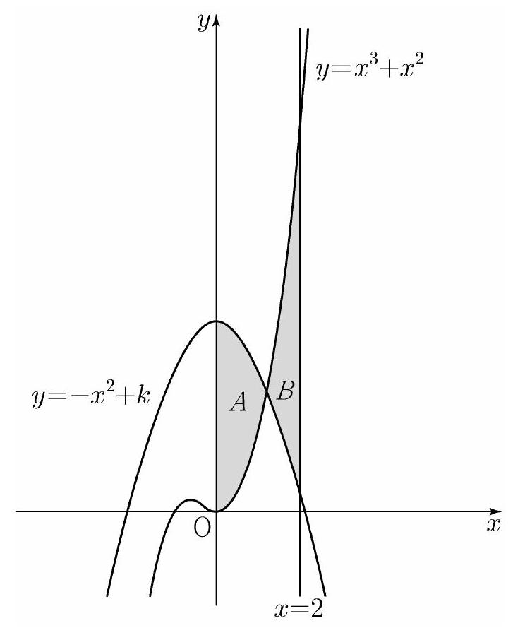 :::
\[\overline{\mathrm{AB}}=5, \overline{\mathrm{AC}}=3 \sqrt{5}, \overline{\mathrm{AD}}=7, \angle \mathrm{BAC}=\angle \mathrm{CAD}\]
일 때, 이 원의 반지름의 길이는? [4점]
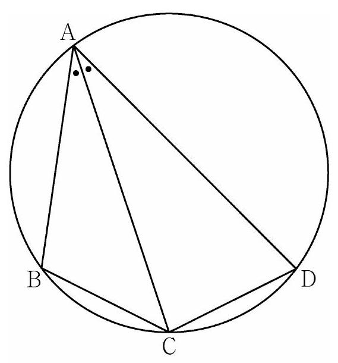 (1) \(\frac{5 \sqrt{2}}{2}\) (2) \(\frac{8 \sqrt{5}}{5}\) (3) \(\frac{5 \sqrt{5}}{3}\) (4) \(\frac{8 \sqrt{2}}{3}\) (5) \(\frac{9 \sqrt{3}}{4}\)
\(n-1 \leq x<n\) 일 때, \(|f(x)|=|6(x-n+1)(x-n)|\) 이다. (단, \(n\) 은 자연수이다.)
열린구간 \((0,4)\) 에서 정의된 함수
\[g(x)=\int_{0}^{x} f(t) d t-\int_{x}^{4} f(t) d t\]
가 \(x=2\) 에서 최솟값 0 을 가질 때, \(\int_{\frac{1}{2}}^{4} f(x) d x\) 의 값은? [4점] (1) \(-\frac{3}{2}\) (2) \(-\frac{1}{2}\) (3) \(\frac{1}{2}\) (4) \(\frac{3}{2}\) (5) \(\frac{5}{2}\) 13. 자연수 \(m(m \geq 2)\) 에 대하여 \(m^{12}\) 의 \(n\) 제곱근 중에서 정수가 존재하도록 하는 2 이상의 자연수 \(n\) 의 개수를 \(f(m)\) 이라 할 때, \(\sum_{m=2}^{9} f(m)\) 의 값은? [4점] (1) 37 (2) 42 (3) 47 (4) 52 (5) 57
\[g(x)= \begin{cases}x & (x<-1 \text { 또는 } x>1) \ f(x) & (-1 \leq x \leq 1)\end{cases}\]
함수 \(h(x)=\lim _{t \rightarrow 0+} g(x+t) \times \lim _{t \rightarrow 2+} g(x+t)\) 에 대하여
<보기>에서 옳은 것만을 있는 대로 고른 것은? [4점]
ᄀ. \(h(1)=3\)
ㄴ. 함수 \(h(x)\) 는 실수 전체의 집합에서 연속이다.
ㄷ. 함수 \(g(x)\) 가 닫힌구간 \([-1,1]\) 에서 감소하고 \(g(-1)=-2\) 이면 함수 \(h(x)\) 는 실수 전체의 집합에서 최솟값을 갖는다. (1) ᄀ (2) 1 (3) ᄀ, ᄂ (4) ᄀ, ᄃ (5) ᄂ, ᄃ 15. 모든 항이 자연수이고 다음 조건을 만족시키는 모든 수열 \(\left\{a_{n}\right\}\) 에 대하여 \(a_{9}\) 의 최댓값과 최솟값을 각각 \(M, m\) 이라 할 때, \(M+m\) 의 값은? [4점]
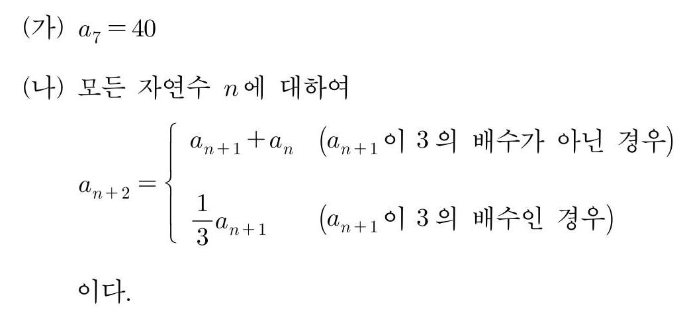 (1) 216 (2) 218 (3) 220 (4) 222 (5) 224
# 단답형
\[\log _{2}(3 x+2)=2+\log _{2}(x-2)\]
를 만족시키는 실수 \(x\) 의 값을 구하시오. [3점]
\[\sum_{k=1}^{5}\left(3 a_{k}+5\right)=55, \quad \sum_{k=1}^{5}\left(a_{k}+b_{k}\right)=32\]
일 때, \(\sum_{k=1}^{5} b_{k}\) 의 값을 구하시오. [3점]
(가) \(0 \leq t \leq 2\) 일 때, \(v(t)=2 t^{3}-8 t\) 이다.
(나) \(t \geq 2\) 일 때, \(a(t)=6 t+4\) 이다.
시각 \(t=0\) 에서 \(t=3\) 까지 점 \(\mathrm{P}\) 가 움직인 거리를 구하시오. [4점] 21. 자연수 \(n\) 에 대하여 함수 \(f(x)\) 를
\[f(x)= \begin{cases}\left|3^{x+2}-n\right| & (x<0) \ \left|\log _{2}(x+4)-n\right| & (x \geq 0)\end{cases}\]
이라 하자. 실수 \(t\) 에 대하여 \(x\) 에 대한 방정식 \(f(x)=t\) 의 서로 다른 실근의 개수를 \(g(t)\) 라 할 때, 함수 \(g(t)\) 의 최댓값이 4 가 되도록 하는 모든 자연수 \(n\) 의 값의 합을 구하시오. [4점] 22. 최고차항의 계수가 1 인 삼차함수 \(f(x)\) 와 실수 전체의 집합에서 연속인 함수 \(g(x)\) 가 다음 조건을 만족시킬 때, \(f(4)\) 의 값을 구하시오. [4점]
(가) 모든 실수 \(x\) 에 대하여
\[f(x)=f(1)+(x-1) f^{\prime}(g(x)) \text { 이다. }\]
(나) 함수 \(g(x)\) 의 최솟값은 \(\frac{5}{2}\) 이다.
(다) \(f(0)=-3, f(g(1))=6\)
# * 확인 사항
○ 답안지의 해당란에 필요한 내용을 정확히 기입(표기)했는지 확인 하시오.
○ 이어서, 「선택과목(확률과 통계)」 문제가 제시되오니, 자신이 선택한 과목인지 확인하시오.
# 3학년도 대학수학능력시험 문제지 제2교시 수학 영역(확률과 통계) 홀수형
5 지선다형
다항식 \(\left(x^{3}+3\right)^{5}\) 의 전개식에서 \(x^{9}\) 의 계수는? [2점] (1) 30 (2) 60 (3) 90 (4) 120 (5) 150
숫자 \(1,2,3,4,5\) 중에서 중복을 허락하여 4 개를 택해 일렬로 나열하여 만들 수 있는 네 자리의 자연수 중 4000 이상인 홀수의 개수는? [3점] (1) 125 (2) 150 (3) 175 (4) 200 (5) 225
흰색 마스크 5 개, 검은색 마스크 9 개가 들어 있는 상자가 있다. 이 상자에서 임의로 3 개의 마스크를 동시에 꺼낼 때, 꺼낸 3 개의 마스크 중에서 적어도 한 개가 흰색 마스크일 확률은? [3점] (1) \(\frac{8}{13}\) (2) \(\frac{17}{26}\) (3) \(\frac{9}{13}\) (4) \(\frac{19}{26}\) (5) \(\frac{10}{13}\)
주머니에 1 이 적힌 흰 공 1 개, 2 가 적힌 흰 공 1 개, 1 이 적힌 검은 공 1 개, 2 가 적힌 검은 공 3 개가 들어 있다. 이 주머니에서 임의로 3 개의 공을 동시에 꺼내는 시행을 한다. 이 시행에서 꺼낸 3 개의 공 중에서 흰 공이 1 개이고 검은 공이 2 개인 사건을 \(A\), 꺼낸 3 개의 공에 적혀 있는 수를 모두 곱한 값이 8 인 사건을 \(B\) 라 할 때, \(\mathrm{P}(A \cup B)\) 의 값은? [3점] (1) \(\frac{11}{20}\) (2) \(\frac{3}{5}\) (3) \(\frac{13}{20}\) (4) \(\frac{7}{10}\) (5) \(\frac{3}{4}\)
::: center 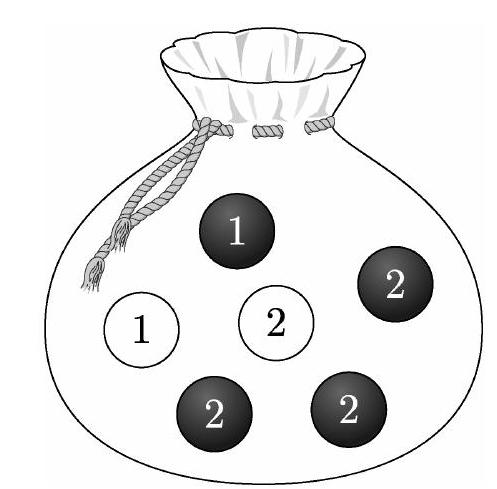 :::
이 회사에서 생산하는 샴푸 중에서 \(n\) 개를 임의추출하여 얻은 표본평균을 이용하여 구하는 \(m\) 에 대한 신뢰도 \(99 \%\) 의 신뢰구간이 \(a \leq m \leq b\) 일 때, \(b-a\) 의 값이 6 이하가 되기 위한 자연수 \(n\) 의 최솟값은? (단, 용량의 단위는 \(\mathrm{mL}\) 이고, \(Z\) 가 표준정규분포를 따르는 확률변수일 때, \(\mathrm{P}(|Z| \leq 1.96)=0.95\), \(\mathrm{P}(|Z| \leq 2.58)=0.99\) 로 계산한다.) [3점] (1) 70 (2) 74 (3) 78 (4) 82 (5) 86
::: center 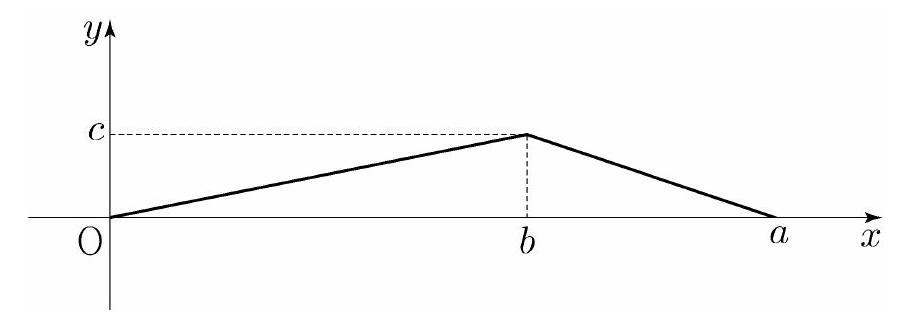 :::
\(\mathrm{P}(X \leq b)-\mathrm{P}(X \geq b)=\frac{1}{4}, \mathrm{P}(X \leq \sqrt{5})=\frac{1}{2}\) 일 때, \(a+b+c\) 의 값은? (단, \(a, b, c\) 는 상수이다.) [4점] (1) \(\frac{11}{2}\) (2) 6 (3) \(\frac{13}{2}\) (4) 7 (5) \(\frac{15}{2}\)
# 4 수학 영역(확률과 통계)
홀수형
# 단답형
::: center 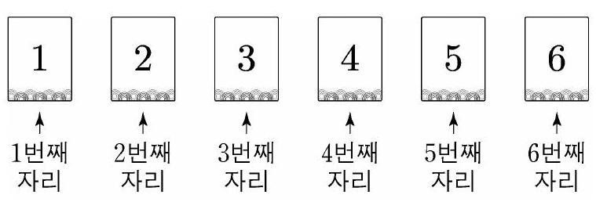 :::
이 6 장의 카드와 한 개의 주사위를 사용하여 다음 시행을 한다.
주사위를 한 번 던져 나온 눈의 수가 \(k\) 이면
\(k\) 번째 자리에 놓여 있는 카드를 한 번 뒤집어 제자리에 놓는다.
위의 시행을 3 번 반복한 후 6 장의 카드에 보이는 모든 수의 합이 짝수일 때, 주사위의 1 의 눈이 한 번만 나왔을 확률은 \(\frac{q}{p}\) 이다. \(p+q\) 의 값을 구하시오. (단, \(p\) 와 \(q\) 는 서로소인 자연수이다.) 30. 집합 \(X=\{x \mid x\) 는 10 이하의 자연수 \(\}\) 에 대하여 다음 조건을 만족시키는 함수 \(f: X \rightarrow X\) 의 개수를 구하시오. [4점]
(가) 9 이하의 모든 자연수 \(x\) 에 대하여 \(f(x) \leq f(x+1)\) 이다.
(나) \(1 \leq x \leq 5\) 일 때 \(f(x) \leq x\) 이고, \(6 \leq x \leq 10\) 일 때 \(f(x) \geq x\) 이다.
(다) \(f(6)=f(5)+6\) \(*\) 확인 사항
○ 답안지의 해당란에 필요한 내용을 정확히 기입(표기)했는지 확인 하시오.
○ 이어서, 「선택과목(미적분)」 문제가 제시되오니, 자신이 선택한 과목인지 확인하시오. 제 2 교시
# 3학년도 대학수학능력시험 문제지
# 수학 영역(미적분)
홀수형
5지선다형
\(\lim _{x \rightarrow 0} \frac{\ln (x+1)}{\sqrt{x+4}-2}\) 의 값은? [2점] (1) 1 (2) 2 (3) 3 (4) 4 (5) 5
\(\lim _{n \rightarrow \infty} \frac{1}{n} \sum_{k=1}^{n} \sqrt{1+\frac{3 k}{n}}\) 의 값은? [3점] (1) \(\frac{4}{3}\) (2) \(\frac{13}{9}\) (3) \(\frac{14}{9}\) (4) \(\frac{5}{3}\) (5) \(\frac{16}{9}\)
등비수열 \(\left\{a_{n}\right\}\) 에 대하여 \(\lim _{n \rightarrow \infty} \frac{a_{n}+1}{3^{n}+2^{2 n-1}}=3\) 일 때, \(a_{2}\) 의 값은? [3점] (1) 16 (2) 18 (3) 20 (4) 22 (5) 24
그림과 같이 곡선 \(y=\sqrt{\sec ^{2} x+\tan x}\left(0 \leq x \leq \frac{\pi}{3}\right)\) 와 \(x\) 축, \(y\) 축 및 직선 \(x=\frac{\pi}{3}\) 로 둘러싸인 부분을 밑면으로 하는 입체도형이 있다. 이 입체도형을 \(x\) 축에 수직인 평면으로 자른 단면이 모두 정사각형일 때, 이 입체도형의 부피는? [3점]
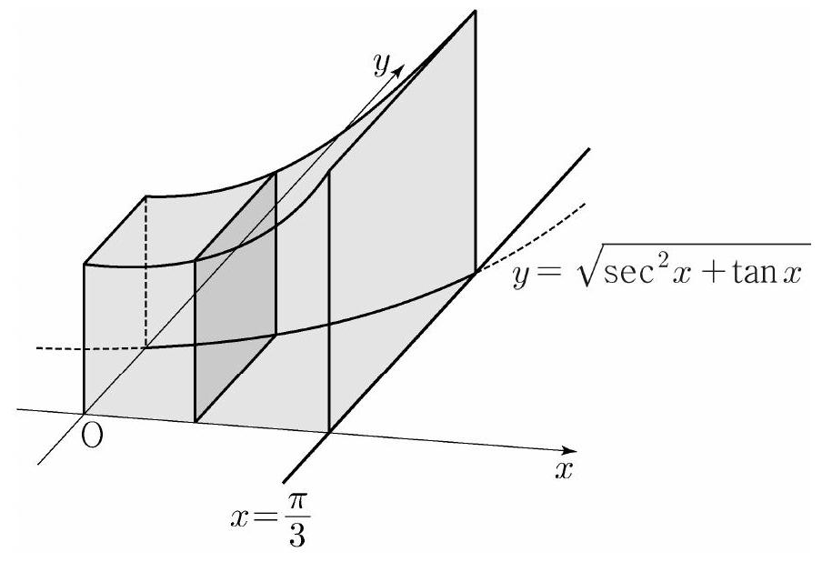 (1) \(\frac{\sqrt{3}}{2}+\frac{\ln 2}{2}\) (2) \(\frac{\sqrt{3}}{2}+\ln 2\) (3) \(\sqrt{3}+\frac{\ln 2}{2}\) (4) \(\sqrt{3}+\ln 2\) (5) \(\sqrt{3}+2 \ln 2\)
그림 \(R_{1}\) 에서 선분 \(\mathrm{OA}_{1}\) 위의 점 \(\mathrm{A}_{2}\) 와 선분 \(\mathrm{OB}_{1}\) 위의 점 \(\mathrm{B}_{2}\) 를 \(\overline{\mathrm{OQ}_{1}}=\overline{\mathrm{OA}_{2}}=\overline{\mathrm{OB}_{2}}\) 가 되도록 잡고, 중심이 \(\mathrm{O}\), 반지름의 길이가 \(\overline{\mathrm{OQ}_{1}}\), 중심각의 크기가 \(\frac{\pi}{2}\) 인 부채꼴 \(\mathrm{OA}_{2} \mathrm{~B}_{2}\) 를 그린다. 그림 \(R_{1}\) 을 얻은 것과 같은 방법으로 네 점 \(\mathrm{P}_{2}, \mathrm{C}_{2}, \mathrm{D}_{2}, \mathrm{Q}_{2}\) 를 잡고, 이등변삼각형 \(\mathrm{P}_{2} \mathrm{Q}_{2} \mathrm{~A}_{2}\) 에 색칠하여 얻은 그림을 \(R_{2}\) 라 하자. 이와 같은 과정을 계속하여 \(n\) 번째 얻은 그림 \(R_{n}\) 에 색칠되어 있는 부분의 넓이를 \(S_{n}\) 이라 할 때, \(\lim _{n \rightarrow \infty} S_{n}\) 의 값은? [3점] 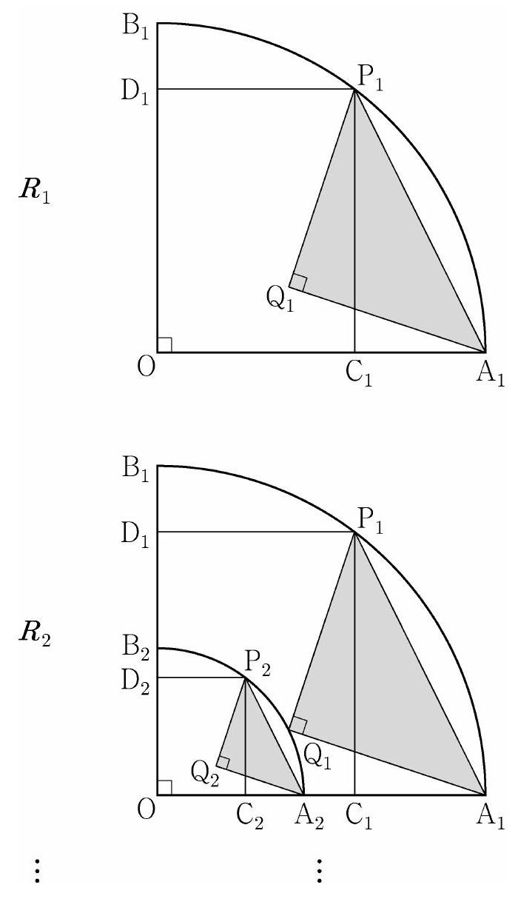 (1) \(\frac{9}{40}\) (2) \(\frac{1}{4}\) (3) \(\frac{11}{40}\) (4) \(\frac{3}{10}\) (5) \(\frac{13}{40}\)
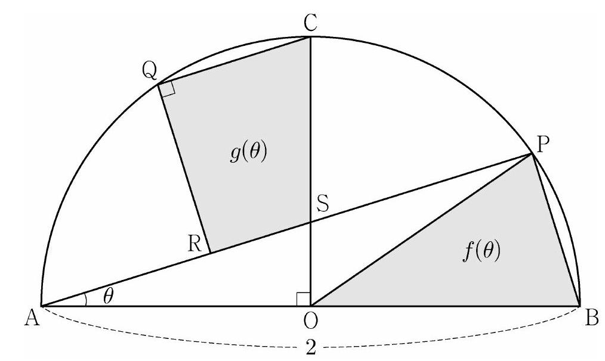 (1) 1 (2) 2 (3) 3 (4) 4 (5) 5
# 단답형
\[\begin{aligned} & \text { (가) } \lim _{x \rightarrow-\infty} \frac{f(x)+6}{e^{x}}=1 \ & \text { (나) } f(\ln 2)=0 \end{aligned}\]
함수 \(f(x)\) 의 역함수를 \(g(x)\) 라 할 때, \(\int_{0}^{14} g(x) d x=p+q \ln 2\) 이다. \(p+q\) 의 값을 구하시오. (단, \(p, q\) 는 유리수이고, \(\ln 2\) 는 무리수이다.) [4점] 30. 최고차항의 계수가 양수인 삼차함수 \(f(x)\) 와 함수 \(g(x)=e^{\sin \pi x}-1\) 에 대하여 실수 전체의 집합에서 정의된 합성함수 \(h(x)=g(f(x))\) 가 다음 조건을 만족시킨다.
(가) 함수 \(h(x)\) 는 \(x=0\) 에서 극댓값 0 을 갖는다.
(나) 열린구간 \((0,3)\) 에서 방정식 \(h(x)=1\) 의 서로 다른 실근의 개수는 7 이다.
\(f(3)=\frac{1}{2}, f^{\prime}(3)=0\) 일 때, \(f(2)=\frac{q}{p}\) 이다. \(p+q\) 의 값을 구하시오. (단, \(p\) 와 \(q\) 는 서로소인 자연수이다.) [4점] * 확인 사항
○ 답안지의 해당란에 필요한 내용을 정확히 기입(표기)했는지 확인 하시오.
○ 이어서, 「선택과목(기하)」 문제가 제시되오니, 자신이 선택한 과목인지 확인하시오. 제 2 교시
# 3학년도 대학수학능력시험 문제지
# 수학 영역(기하)
홀수형
# 5 지선다형
[2점] (1) 1 (2) 2 (3) 3 (4) 4 (5) 5
초점이 \(\mathrm{F}\left(\frac{1}{3}, 0\right)\) 이고 준선이 \(x=-\frac{1}{3}\) 인 포물선이 점 \((a, 2)\) 를 지날 때, \(a\) 의 값은? [3점] (1) 1 (2) 2 (3) 3 (4) 4 (5) 5
타원 \(\frac{x^{2}}{a^{2}}+\frac{y^{2}}{b^{2}}=1\) 위의 점 \((2,1)\) 에서의 접선의 기울기가 \(-\frac{1}{2}\) 일 때, 이 타원의 두 초점 사이의 거리는? (단, \(a, b\) 는 양수이다.) [3점] (1) \(2 \sqrt{3}\) (2) 4 (3) \(2 \sqrt{5}\) (4) \(2 \sqrt{6}\) (5) \(2 \sqrt{7}\)
좌표평면에서 세 벡터
\[\vec{a}=(2,4), \quad \vec{b}=(2,8), \quad \vec{c}=(1,0)\]
에 대하여 두 벡터 \(\vec{p}, \vec{q}\) 가
\[(\vec{p}-\vec{a}) \cdot(\vec{p}-\vec{b})=0, \quad \vec{q}=\frac{1}{2} \vec{a}+t \vec{c}(t \text { 는 실수 })\]
를 만족시킬 때, \(|\vec{p}-\vec{q}|\) 의 최솟값은? [3점] (1) \(\frac{3}{2}\) (2) 2 (3) \(\frac{5}{2}\) (4) 3 (5) \(\frac{7}{2}\) 27. 좌표공간에 직선 \(\mathrm{AB}\) 를 포함하는 평면 \(\alpha\) 가 있다. 평면 \(\alpha\) 위에 있지 않은 점 \(\mathrm{C}\) 에 대하여 직선 \(\mathrm{AB}\) 와 직선 \(\mathrm{AC}\) 가 이루는 예각의 크기를 \(\theta_{1}\) 이라 할 때 \(\sin \theta_{1}=\frac{4}{5}\) 이고, 직선 \(\mathrm{AC}\) 와 평면 \(\alpha\) 가 이루는 예각의 크기는 \(\frac{\pi}{2}-\theta_{1}\) 이다. 평면 \(\mathrm{ABC}\) 와 평면 \(\alpha\) 가 이루는 예각의 크기를 \(\theta_{2}\) 라 할 때, \(\cos \theta_{2}\) 의 값은? [3점] (1) \(\frac{\sqrt{7}}{4}\) (2) \(\frac{\sqrt{7}}{5}\) (3) \(\frac{\sqrt{7}}{6}\) (4) \(\frac{\sqrt{7}}{7}\) (5) \(\frac{\sqrt{7}}{8}\)
::: center 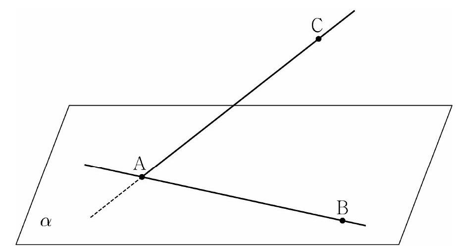 :::
직선 \(\mathrm{AF}\) 는 쌍곡선 \(C\) 의 한 점근선과 평행하고
\[\overline{\mathrm{AP}}: \overline{\mathrm{PP}^{\prime}}=5: 6, \quad \overline{\mathrm{PF}}=1\]
일 때, 쌍곡선 \(C\) 의 주축의 길이는? [4점] (1) \(\frac{13}{6}\) (2) \(\frac{9}{4}\) (3) \(\frac{7}{3}\) (4) \(\frac{29}{12}\) (5) \(\frac{5}{2}\)
::: center 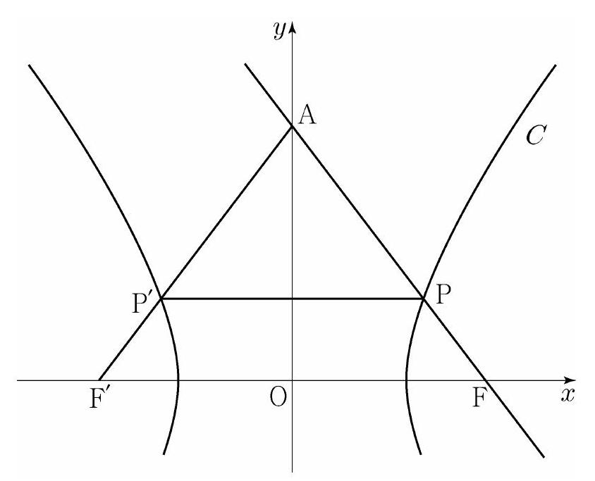 :::
# 4 수학 영역(기하)
홀수형
# 단답 형
::: center 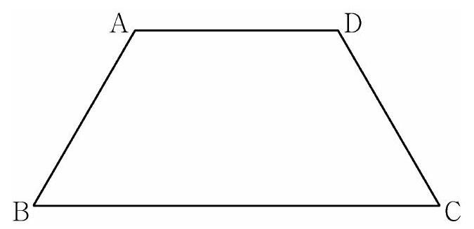 :::
::: center 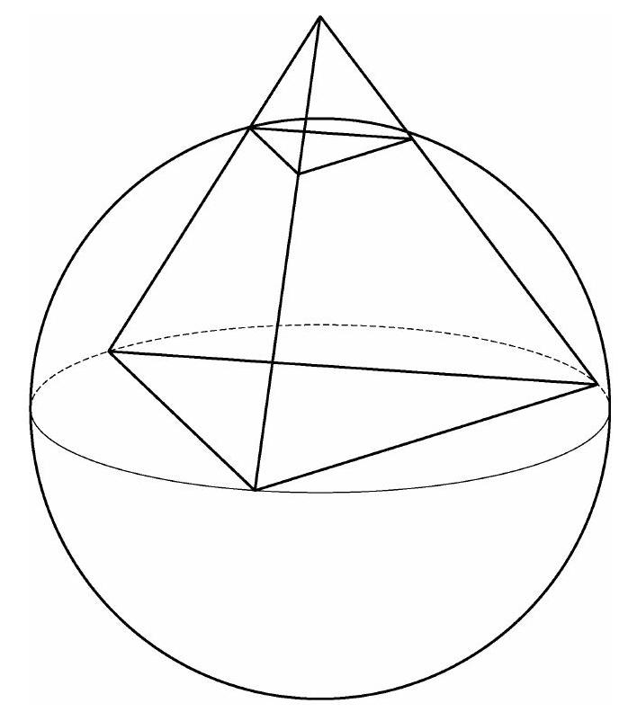 :::
○ 답안지의 해당란에 필요한 내용을 정확히 기입(표기)했는지 확인 하시오.
# 3학년도 대학수학능력시험 문제지
제 2 교시
# 수하 영여
| 구분 | 문제 |
|---|---|
| 공통 | 1. $\left(\frac{4}{2^{\sqrt{2}}}\right)^{2+\sqrt{2}}$ 의 값은? \[2점\] (1) $\frac{1}{4}$ (2) $\frac{1}{2}$ (3) 1 (4) 2 (5) 4 |
| 공통 | 2. $\lim _{x \rightarrow \infty} \frac{\sqrt{x^{2}-2}+3 x}{x+5}$ 의 값은? \[2점\] (1) 1 (2) 2 (3) 3 (4) 4 (5) 5 |
| 공통 | 3. 공비가 양수인 등비수열 $\left\{a_{n}\right\}$ 이 $$a_{2}+a_{4}=30, \quad a_{4}+a_{6}=\frac{15}{2}$$ 를 만족시킬 때, $a_{1}$ 의 값은? \[3점\] (1) 48 (2) 56 (3) 64 (4) 72 (5) 80 |
| 공통 | 4. 다항함수 $f(x)$ 에 대하여 함수 $g(x)$ 를 $$g(x)=x^{2} f(x)$$ 라 하자. $f(2)=1, f^{\prime}(2)=3$ 일 때, $g^{\prime}(2)$ 의 값은? \[3점\] (1) 12 (2) 14 (3) 16 (4) 18 (5) 20 |
| 공통 | 5. $\tan \theta<0$ 이고 $\cos \left(\frac{\pi}{2}+\theta\right)=\frac{\sqrt{5}}{5}$ 일 때, $\cos \theta$ 의 값은? \[3점\] (1) $-\frac{2 \sqrt{5}}{5}$ (2) $-\frac{\sqrt{5}}{5}$ (3) 0 (4) $\frac{\sqrt{5}}{5}$ (5) $\frac{2 \sqrt{5}}{5}$ |
| 공통 | 6. 함수 $f(x)=2 x^{3}-9 x^{2}+a x+5$ 는 $x=1$ 에서 극대이고, $x=b$ 에서 극소이다. $a+b$ 의 값은? (단, $a, b$ 는 상수이다.) \[3점\] (1) 12 (2) 14 (3) 16 (4) 18 (5) 20 |
| 공통 | 7. 모든 항이 양수이고 첫째항과 공차가 같은 등차수열 $\left\{a_{n}\right\}$ 이 $$\sum_{k=1}^{15} \frac{1}{\sqrt{a_{k}}+\sqrt{a_{k+1}}}=2$$ 를 만족시킬 때, $a_{4}$ 의 값은? \[3점\] (1) 6 (2) 7 (3) 8 (4) 9 (5) 10 |
| 공통 | 8. 점 $(0,4)$ 에서 곡선 $y=x^{3}-x+2$ 에 그은 접선의 $x$ 절편은? \[3점\] (1) $-\frac{1}{2}$ (2) -1 (3) $-\frac{3}{2}$ (4) -2 (5) $-\frac{5}{2}$ |
| 공통 | 9. 함수 $$f(x)=a-\sqrt{3} \tan 2 x$$ 가 닫힌구간 $\left[-\frac{\pi}{6}, b\right]$ 에서 최댓값 7 , 최솟값 3 을 가질 때, $a \times b$ 의 값은? (단, $a, b$ 는 상수이다.) \[4점\] (1) $\frac{\pi}{2}$ (2) $\frac{5 \pi}{12}$ (3) $\frac{\pi}{3}$ (4) $\frac{\pi}{4}$ (5) $\frac{\pi}{6}$ |
| 공통 | 10. 두 곡선 $y=x^{3}+x^{2}, y=-x^{2}+k$ 와 $y$ 축으로 둘러싸인 부분의 넓이를 $A$, 두 곡선 $y=x^{3}+x^{2}, y=-x^{2}+k$ 와 직선 $x=2$ 로 둘러싸인 부분의 넓이를 $B$ 라 하자. $A=B$ 일 때, 상수 $k$ 의 값은? (단, $4<k<5$ ) \[4점\] (1) $\frac{25}{6}$ (2) $\frac{13}{3}$ (3) $\frac{9}{2}$ (4) $\frac{14}{3}$ (5) $\frac{29}{6}$ ::: center {width="\\textwidth"} ::: |
| 공통 | 11. 그림과 같이 사각형 $\mathrm{ABCD}$ 가 한 원에 내접하고 $$\overline{\mathrm{AB}}=5, \overline{\mathrm{AC}}=3 \sqrt{5}, \overline{\mathrm{AD}}=7, \angle \mathrm{BAC}=\angle \mathrm{CAD}$$ 일 때, 이 원의 반지름의 길이는? \[4점\] {width="\\textwidth"} (1) $\frac{5 \sqrt{2}}{2}$ (2) $\frac{8 \sqrt{5}}{5}$ (3) $\frac{5 \sqrt{5}}{3}$ (4) $\frac{8 \sqrt{2}}{3}$ (5) $\frac{9 \sqrt{3}}{4}$ |
| 공통 | 12. 실수 전체의 집합에서 연속인 함수 $f(x)$ 가 다음 조건을 만족시킨다. $n-1 \leq x<n$ 일 때, $|f(x)|=|6(x-n+1)(x-n)|$ 이다. (단, $n$ 은 자연수이다.) 열린구간 $(0,4)$ 에서 정의된 함수 $$g(x)=\int_{0}^{x} f(t) d t-\int_{x}^{4} f(t) d t$$ 가 $x=2$ 에서 최솟값 0 을 가질 때, $\int_{\frac{1}{2}}^{4} f(x) d x$ 의 값은? \[4점\] (1) $-\frac{3}{2}$ (2) $-\frac{1}{2}$ (3) $\frac{1}{2}$ (4) $\frac{3}{2}$ (5) $\frac{5}{2}$ |
| 공통 | 13. 자연수 $m(m \geq 2)$ 에 대하여 $m^{12}$ 의 $n$ 제곱근 중에서 정수가 존재하도록 하는 2 이상의 자연수 $n$ 의 개수를 $f(m)$ 이라 할 때, $\sum_{m=2}^{9} f(m)$ 의 값은? \[4점\] (1) 37 (2) 42 (3) 47 (4) 52 (5) 57 |
| 공통 | 14. 다항함수 $f(x)$ 에 대하여 함수 $g(x)$ 를 다음과 같이 정의한다. $$g(x)= \begin{cases}x & (x<-1 \text { 또는 } x>1) \\ f(x) & (-1 \leq x \leq 1)\end{cases}$$ 함수 $h(x)=\lim _{t \rightarrow 0+} g(x+t) \times \lim _{t \rightarrow 2+} g(x+t)$ 에 대하여 \<보기\>에서 옳은 것만을 있는 대로 고른 것은? \[4점\] ᄀ. $h(1)=3$ ㄴ. 함수 $h(x)$ 는 실수 전체의 집합에서 연속이다. ㄷ. 함수 $g(x)$ 가 닫힌구간 $[-1,1]$ 에서 감소하고 $g(-1)=-2$ 이면 함수 $h(x)$ 는 실수 전체의 집합에서 최솟값을 갖는다. (1) ᄀ (2) 1 (3) ᄀ, ᄂ (4) ᄀ, ᄃ (5) ᄂ, ᄃ |
| 공통 | 15. 모든 항이 자연수이고 다음 조건을 만족시키는 모든 수열 $\left\{a_{n}\right\}$ 에 대하여 $a_{9}$ 의 최댓값과 최솟값을 각각 $M, m$ 이라 할 때, $M+m$ 의 값은? \[4점\] {width="\\textwidth"} (1) 216 (2) 218 (3) 220 (4) 222 (5) 224 # 단답형 |
| 공통 | 16. 방정식 $$\log _{2}(3 x+2)=2+\log _{2}(x-2)$$ 를 만족시키는 실수 $x$ 의 값을 구하시오. \[3점\] |
| 공통 | 17. 함수 $f(x)$ 에 대하여 $f^{\prime}(x)=4 x^{3}-2 x$ 이고 $f(0)=3$ 일 때, $f(2)$ 의 값을 구하시오. \[3점\] |
| 공통 | 18. 두 수열 $\left\{a_{n}\right\},\left\{b_{n}\right\}$ 에 대하여 $$\sum_{k=1}^{5}\left(3 a_{k}+5\right)=55, \quad \sum_{k=1}^{5}\left(a_{k}+b_{k}\right)=32$$ 일 때, $\sum_{k=1}^{5} b_{k}$ 의 값을 구하시오. \[3점\] |
| 공통 | 19. 방정식 $2 x^{3}-6 x^{2}+k=0$ 의 서로 다른 양의 실근의 개수가 2 가 되도록 하는 정수 $k$ 의 개수를 구하시오. \[3점\] |
| 공통 | 20. 수직선 위를 움직이는 점 $\mathrm{P}$ 의 시각 $t(t \geq 0)$ 에서의 속도 $v(t)$ 와 가속도 $a(t)$ 가 다음 조건을 만족시킨다. (가) $0 \leq t \leq 2$ 일 때, $v(t)=2 t^{3}-8 t$ 이다. (나) $t \geq 2$ 일 때, $a(t)=6 t+4$ 이다. 시각 $t=0$ 에서 $t=3$ 까지 점 $\mathrm{P}$ 가 움직인 거리를 구하시오. \[4점\] |
| 공통 | 21. 자연수 $n$ 에 대하여 함수 $f(x)$ 를 $$f(x)= \begin{cases}\left|3^{x+2}-n\right| & (x<0) \\ \left|\log _{2}(x+4)-n\right| & (x \geq 0)\end{cases}$$ 이라 하자. 실수 $t$ 에 대하여 $x$ 에 대한 방정식 $f(x)=t$ 의 서로 다른 실근의 개수를 $g(t)$ 라 할 때, 함수 $g(t)$ 의 최댓값이 4 가 되도록 하는 모든 자연수 $n$ 의 값의 합을 구하시오. \[4점\] |
| 공통 | 22. 최고차항의 계수가 1 인 삼차함수 $f(x)$ 와 실수 전체의 집합에서 연속인 함수 $g(x)$ 가 다음 조건을 만족시킬 때, $f(4)$ 의 값을 구하시오. \[4점\] (가) 모든 실수 $x$ 에 대하여 $$f(x)=f(1)+(x-1) f^{\prime}(g(x)) \text { 이다. }$$ (나) 함수 $g(x)$ 의 최솟값은 $\frac{5}{2}$ 이다. (다) $f(0)=-3, f(g(1))=6$ # \* 확인 사항 ○ 답안지의 해당란에 필요한 내용을 정확히 기입(표기)했는지 확인 하시오. ○ 이어서, 「선택과목(확률과 통계)」 문제가 제시되오니, 자신이 선택한 과목인지 확인하시오. # 3학년도 대학수학능력시험 문제지 제2교시 수학 영역(확률과 통계) 홀수형 5 지선다형 |
| 확통 | 23. 다항식 $\left(x^{3}+3\right)^{5}$ 의 전개식에서 $x^{9}$ 의 계수는? \[2점\] (1) 30 (2) 60 (3) 90 (4) 120 (5) 150 |
| 확통 | 24. 숫자 $1,2,3,4,5$ 중에서 중복을 허락하여 4 개를 택해 일렬로 나열하여 만들 수 있는 네 자리의 자연수 중 4000 이상인 홀수의 개수는? \[3점\] (1) 125 (2) 150 (3) 175 (4) 200 (5) 225 |
| 확통 | 25. 흰색 마스크 5 개, 검은색 마스크 9 개가 들어 있는 상자가 있다. 이 상자에서 임의로 3 개의 마스크를 동시에 꺼낼 때, 꺼낸 3 개의 마스크 중에서 적어도 한 개가 흰색 마스크일 확률은? \[3점\] (1) $\frac{8}{13}$ (2) $\frac{17}{26}$ (3) $\frac{9}{13}$ (4) $\frac{19}{26}$ (5) $\frac{10}{13}$ |
| 확통 | 25. 주머니에 1 이 적힌 흰 공 1 개, 2 가 적힌 흰 공 1 개, 1 이 적힌 검은 공 1 개, 2 가 적힌 검은 공 3 개가 들어 있다. 이 주머니에서 임의로 3 개의 공을 동시에 꺼내는 시행을 한다. 이 시행에서 꺼낸 3 개의 공 중에서 흰 공이 1 개이고 검은 공이 2 개인 사건을 $A$, 꺼낸 3 개의 공에 적혀 있는 수를 모두 곱한 값이 8 인 사건을 $B$ 라 할 때, $\mathrm{P}(A \cup B)$ 의 값은? \[3점\] (1) $\frac{11}{20}$ (2) $\frac{3}{5}$ (3) $\frac{13}{20}$ (4) $\frac{7}{10}$ (5) $\frac{3}{4}$ ::: center {width="\\textwidth"} ::: |
| 확통 | 27. 어느 회사에서 생산하는 샴푸 1 개의 용량은 정규분포 $\mathrm{N}\left(m, \sigma^{2}\right)$ 을 따른다고 한다. 이 회사에서 생산하는 샴푸 중에서 16 개를 임의추출하여 얻은 표본평균을 이용하여 구한 $m$ 에 대한 신뢰도 $95 \%$ 의 신뢰구간이 $746.1 \leq m \leq 755.9$ 이다. 이 회사에서 생산하는 샴푸 중에서 $n$ 개를 임의추출하여 얻은 표본평균을 이용하여 구하는 $m$ 에 대한 신뢰도 $99 \%$ 의 신뢰구간이 $a \leq m \leq b$ 일 때, $b-a$ 의 값이 6 이하가 되기 위한 자연수 $n$ 의 최솟값은? (단, 용량의 단위는 $\mathrm{mL}$ 이고, $Z$ 가 표준정규분포를 따르는 확률변수일 때, $\mathrm{P}(|Z| \leq 1.96)=0.95$, $\mathrm{P}(|Z| \leq 2.58)=0.99$ 로 계산한다.) \[3점\] (1) 70 (2) 74 (3) 78 (4) 82 (5) 86 |
| 확통 | 28. 연속확률변수 $X$ 가 갖는 값의 범위는 $0 \leq X \leq a$ 이고, $X$ 의 확률밀도함수의 그래프가 그림과 같다. ::: center {width="\\textwidth"} ::: $\mathrm{P}(X \leq b)-\mathrm{P}(X \geq b)=\frac{1}{4}, \mathrm{P}(X \leq \sqrt{5})=\frac{1}{2}$ 일 때, $a+b+c$ 의 값은? (단, $a, b, c$ 는 상수이다.) \[4점\] (1) $\frac{11}{2}$ (2) 6 (3) $\frac{13}{2}$ (4) 7 (5) $\frac{15}{2}$ # 4 수학 영역(확률과 통계) 홀수형 # 단답형 |
| 확통 | 29. 앞면에는 1 부터 6 까지의 자연수가 하나씩 적혀 있고 뒷면에는 모두 0 이 하나씩 적혀 있는 6 장의 카드가 있다. 이 6 장의 카드가 그림과 같이 6 이하의 자연수 $k$ 에 대하여 $k$ 번째 자리에 자연수 $k$ 가 보이도록 놓여 있다. ::: center {width="\\textwidth"} ::: 이 6 장의 카드와 한 개의 주사위를 사용하여 다음 시행을 한다. 주사위를 한 번 던져 나온 눈의 수가 $k$ 이면 $k$ 번째 자리에 놓여 있는 카드를 한 번 뒤집어 제자리에 놓는다. 위의 시행을 3 번 반복한 후 6 장의 카드에 보이는 모든 수의 합이 짝수일 때, 주사위의 1 의 눈이 한 번만 나왔을 확률은 $\frac{q}{p}$ 이다. $p+q$ 의 값을 구하시오. (단, $p$ 와 $q$ 는 서로소인 자연수이다.) |
| 확통 | 30. 집합 $X=\{x \mid x$ 는 10 이하의 자연수 $\}$ 에 대하여 다음 조건을 만족시키는 함수 $f: X \rightarrow X$ 의 개수를 구하시오. \[4점\] (가) 9 이하의 모든 자연수 $x$ 에 대하여 $f(x) \leq f(x+1)$ 이다. (나) $1 \leq x \leq 5$ 일 때 $f(x) \leq x$ 이고, $6 \leq x \leq 10$ 일 때 $f(x) \geq x$ 이다. (다) $f(6)=f(5)+6$ $*$ 확인 사항 ○ 답안지의 해당란에 필요한 내용을 정확히 기입(표기)했는지 확인 하시오. ○ 이어서, 「선택과목(미적분)」 문제가 제시되오니, 자신이 선택한 과목인지 확인하시오. 제 2 교시 # 3학년도 대학수학능력시험 문제지 # 수학 영역(미적분) 홀수형 5지선다형 |
| 미적 | 23. $\lim _{x \rightarrow 0} \frac{\ln (x+1)}{\sqrt{x+4}-2}$ 의 값은? \[2점\] (1) 1 (2) 2 (3) 3 (4) 4 (5) 5 |
| 미적 | 24. $\lim _{n \rightarrow \infty} \frac{1}{n} \sum_{k=1}^{n} \sqrt{1+\frac{3 k}{n}}$ 의 값은? \[3점\] (1) $\frac{4}{3}$ (2) $\frac{13}{9}$ (3) $\frac{14}{9}$ (4) $\frac{5}{3}$ (5) $\frac{16}{9}$ |
| 미적 | 25. 등비수열 $\left\{a_{n}\right\}$ 에 대하여 $\lim _{n \rightarrow \infty} \frac{a_{n}+1}{3^{n}+2^{2 n-1}}=3$ 일 때, $a_{2}$ 의 값은? \[3점\] (1) 16 (2) 18 (3) 20 (4) 22 (5) 24 |
| 미적 | 25. 그림과 같이 곡선 $y=\sqrt{\sec ^{2} x+\tan x}\left(0 \leq x \leq \frac{\pi}{3}\right)$ 와 $x$ 축, $y$ 축 및 직선 $x=\frac{\pi}{3}$ 로 둘러싸인 부분을 밑면으로 하는 입체도형이 있다. 이 입체도형을 $x$ 축에 수직인 평면으로 자른 단면이 모두 정사각형일 때, 이 입체도형의 부피는? \[3점\] {width="\\textwidth"} (1) $\frac{\sqrt{3}}{2}+\frac{\ln 2}{2}$ (2) $\frac{\sqrt{3}}{2}+\ln 2$ (3) $\sqrt{3}+\frac{\ln 2}{2}$ (4) $\sqrt{3}+\ln 2$ (5) $\sqrt{3}+2 \ln 2$ |
| 미적 | 27. 그림과 같이 중심이 $\mathrm{O}$, 반지름의 길이가 1 이고 중심각의 크기가 $\frac{\pi}{2}$ 인 부채꼴 $\mathrm{OA}_{1} \mathrm{~B}_{1}$ 이 있다. 호 $\mathrm{A}_{1} \mathrm{~B}_{1}$ 위에 점 $\mathrm{P}_{1}$, 선분 $\mathrm{OA}_{1}$ 위에 점 $\mathrm{C}_{1}$, 선분 $\mathrm{OB}_{1}$ 위에 점 $\mathrm{D}_{1}$ 을 사각형 $\mathrm{OC}_{1} \mathrm{P}_{1} \mathrm{D}_{1}$ 이 $\overline{\mathrm{OC}_{1}}: \overline{\mathrm{OD}_{1}}=3: 4$ 인 직사각형이 되도록 잡는다. 부채꼴 $\mathrm{OA}_{1} \mathrm{~B}_{1}$ 의 내부에 점 $\mathrm{Q}_{1}$ 을 $\overline{\mathrm{P}_{1} \mathrm{Q}_{1}}=\overline{\mathrm{A}_{1} \mathrm{Q}_{1}}, \angle \mathrm{P}_{1} \mathrm{Q}_{1} \mathrm{~A}_{1}=\frac{\pi}{2}$ 가 되도록 잡고, 이등변삼각형 $\mathrm{P}_{1} \mathrm{Q}_{1} \mathrm{~A}_{1}$ 에 색칠하여 얻은 그림을 $R_{1}$ 이라 하자. 그림 $R_{1}$ 에서 선분 $\mathrm{OA}_{1}$ 위의 점 $\mathrm{A}_{2}$ 와 선분 $\mathrm{OB}_{1}$ 위의 점 $\mathrm{B}_{2}$ 를 $\overline{\mathrm{OQ}_{1}}=\overline{\mathrm{OA}_{2}}=\overline{\mathrm{OB}_{2}}$ 가 되도록 잡고, 중심이 $\mathrm{O}$, 반지름의 길이가 $\overline{\mathrm{OQ}_{1}}$, 중심각의 크기가 $\frac{\pi}{2}$ 인 부채꼴 $\mathrm{OA}_{2} \mathrm{~B}_{2}$ 를 그린다. 그림 $R_{1}$ 을 얻은 것과 같은 방법으로 네 점 $\mathrm{P}_{2}, \mathrm{C}_{2}, \mathrm{D}_{2}, \mathrm{Q}_{2}$ 를 잡고, 이등변삼각형 $\mathrm{P}_{2} \mathrm{Q}_{2} \mathrm{~A}_{2}$ 에 색칠하여 얻은 그림을 $R_{2}$ 라 하자. 이와 같은 과정을 계속하여 $n$ 번째 얻은 그림 $R_{n}$ 에 색칠되어 있는 부분의 넓이를 $S_{n}$ 이라 할 때, $\lim _{n \rightarrow \infty} S_{n}$ 의 값은? \[3점\] ){width="\\textwidth"} (1) $\frac{9}{40}$ (2) $\frac{1}{4}$ (3) $\frac{11}{40}$ (4) $\frac{3}{10}$ (5) $\frac{13}{40}$ |
| 미적 | 28. 그림과 같이 중심이 $\mathrm{O}$ 이고 길이가 2 인 선분 $\mathrm{AB}$ 를 지름으로 하는 반원 위에 $\angle \mathrm{AOC}=\frac{\pi}{2}$ 인 점 $\mathrm{C}$ 가 있다. 호 $\mathrm{BC}$ 위에 점 $\mathrm{P}$ 와 호 $\mathrm{CA}$ 위에 점 $\mathrm{Q}$ 를 $\overline{\mathrm{PB}}=\overline{\mathrm{QC}}$ 가 되도록 잡고, 선분 $\mathrm{AP}$ 위에 점 $\mathrm{R}$ 를 $\angle \mathrm{CQR}=\frac{\pi}{2}$ 가 되도록 잡는다. 선분 $\mathrm{AP}$ 와 선분 $\mathrm{CO}$ 의 교점을 $\mathrm{S}$ 라 하자. $\angle \mathrm{PAB}=\theta$ 일 때, 삼각형 $\mathrm{POB}$ 의 넓이를 $f(\theta)$, 사각형 $\mathrm{CQRS}$ 의 넓이를 $g(\theta)$ 라 하자. $\lim _{\theta \rightarrow 0+} \frac{3 f(\theta)-2 g(\theta)}{\theta^{2}}$ 의 값은? (단, $0<\theta<\frac{\pi}{4}$ ) \[4점\] {width="\\textwidth"} (1) 1 (2) 2 (3) 3 (4) 4 (5) 5 # 단답형 |
| 미적 | 29. 세 상수 $a, b, c$ 에 대하여 함수 $f(x)=a e^{2 x}+b e^{x}+c$ 가 다음 조건을 만족시킨다. $$\begin{aligned} & \text { (가) } \lim _{x \rightarrow-\infty} \frac{f(x)+6}{e^{x}}=1 \\ & \text { (나) } f(\ln 2)=0 \end{aligned}$$ 함수 $f(x)$ 의 역함수를 $g(x)$ 라 할 때, $\int_{0}^{14} g(x) d x=p+q \ln 2$ 이다. $p+q$ 의 값을 구하시오. (단, $p, q$ 는 유리수이고, $\ln 2$ 는 무리수이다.) \[4점\] |
| 미적 | 30. 최고차항의 계수가 양수인 삼차함수 $f(x)$ 와 함수 $g(x)=e^{\sin \pi x}-1$ 에 대하여 실수 전체의 집합에서 정의된 합성함수 $h(x)=g(f(x))$ 가 다음 조건을 만족시킨다. (가) 함수 $h(x)$ 는 $x=0$ 에서 극댓값 0 을 갖는다. (나) 열린구간 $(0,3)$ 에서 방정식 $h(x)=1$ 의 서로 다른 실근의 개수는 7 이다. $f(3)=\frac{1}{2}, f^{\prime}(3)=0$ 일 때, $f(2)=\frac{q}{p}$ 이다. $p+q$ 의 값을 구하시오. (단, $p$ 와 $q$ 는 서로소인 자연수이다.) \[4점\] \* 확인 사항 ○ 답안지의 해당란에 필요한 내용을 정확히 기입(표기)했는지 확인 하시오. ○ 이어서, 「선택과목(기하)」 문제가 제시되오니, 자신이 선택한 과목인지 확인하시오. 제 2 교시 # 3학년도 대학수학능력시험 문제지 # 수학 영역(기하) 홀수형 # 5 지선다형 |
| 기하 | 23. 좌표공간의 점 $\mathrm{A}(2,2,-1)$ 을 $x$ 축에 대하여 대칭이동한 점을 $\mathrm{B}$ 라 하자. 점 $\mathrm{C}(-2,1,1)$ 에 대하여 선분 $\mathrm{BC}$ 의 길이는? \[2점\] (1) 1 (2) 2 (3) 3 (4) 4 (5) 5 |
| 기하 | 24. 초점이 $\mathrm{F}\left(\frac{1}{3}, 0\right)$ 이고 준선이 $x=-\frac{1}{3}$ 인 포물선이 점 $(a, 2)$ 를 지날 때, $a$ 의 값은? \[3점\] (1) 1 (2) 2 (3) 3 (4) 4 (5) 5 |
| 기하 | 25. 타원 $\frac{x^{2}}{a^{2}}+\frac{y^{2}}{b^{2}}=1$ 위의 점 $(2,1)$ 에서의 접선의 기울기가 $-\frac{1}{2}$ 일 때, 이 타원의 두 초점 사이의 거리는? (단, $a, b$ 는 양수이다.) \[3점\] (1) $2 \sqrt{3}$ (2) 4 (3) $2 \sqrt{5}$ (4) $2 \sqrt{6}$ (5) $2 \sqrt{7}$ |
| 기하 | 25. 좌표평면에서 세 벡터 $$\vec{a}=(2,4), \quad \vec{b}=(2,8), \quad \vec{c}=(1,0)$$ 에 대하여 두 벡터 $\vec{p}, \vec{q}$ 가 $$(\vec{p}-\vec{a}) \cdot(\vec{p}-\vec{b})=0, \quad \vec{q}=\frac{1}{2} \vec{a}+t \vec{c}(t \text { 는 실수 })$$ 를 만족시킬 때, $|\vec{p}-\vec{q}|$ 의 최솟값은? \[3점\] (1) $\frac{3}{2}$ (2) 2 (3) $\frac{5}{2}$ (4) 3 (5) $\frac{7}{2}$ |
| 기하 | 27. 좌표공간에 직선 $\mathrm{AB}$ 를 포함하는 평면 $\alpha$ 가 있다. 평면 $\alpha$ 위에 있지 않은 점 $\mathrm{C}$ 에 대하여 직선 $\mathrm{AB}$ 와 직선 $\mathrm{AC}$ 가 이루는 예각의 크기를 $\theta_{1}$ 이라 할 때 $\sin \theta_{1}=\frac{4}{5}$ 이고, 직선 $\mathrm{AC}$ 와 평면 $\alpha$ 가 이루는 예각의 크기는 $\frac{\pi}{2}-\theta_{1}$ 이다. 평면 $\mathrm{ABC}$ 와 평면 $\alpha$ 가 이루는 예각의 크기를 $\theta_{2}$ 라 할 때, $\cos \theta_{2}$ 의 값은? \[3점\] (1) $\frac{\sqrt{7}}{4}$ (2) $\frac{\sqrt{7}}{5}$ (3) $\frac{\sqrt{7}}{6}$ (4) $\frac{\sqrt{7}}{7}$ (5) $\frac{\sqrt{7}}{8}$ ::: center ){width="\\textwidth"} ::: |
| 기하 | 28. 두 초점이 $\mathrm{F}(c, 0), \mathrm{F}^{\prime}(-c, 0)(c>0)$ 인 쌍곡선 $C$ 와 $y$ 축 위의 점 $\mathrm{A}$ 가 있다. 쌍곡선 $C$ 가 선분 $\mathrm{AF}$ 와 만나는 점을 $\mathrm{P}$, 선분 $\mathrm{AF}^{\prime}$ 과 만나는 점을 $\mathrm{P}^{\prime}$ 이라 하자. 직선 $\mathrm{AF}$ 는 쌍곡선 $C$ 의 한 점근선과 평행하고 $$\overline{\mathrm{AP}}: \overline{\mathrm{PP}^{\prime}}=5: 6, \quad \overline{\mathrm{PF}}=1$$ 일 때, 쌍곡선 $C$ 의 주축의 길이는? \[4점\] (1) $\frac{13}{6}$ (2) $\frac{9}{4}$ (3) $\frac{7}{3}$ (4) $\frac{29}{12}$ (5) $\frac{5}{2}$ ::: center {width="\\textwidth"} ::: # 4 수학 영역(기하) 홀수형 # 단답 형 |
| 기하 | 29. 평면 $\alpha$ 위에 $\overline{\mathrm{AB}}=\overline{\mathrm{CD}}=\overline{\mathrm{AD}}=2, \angle \mathrm{ABC}=\angle \mathrm{BCD}=\frac{\pi}{3}$ 인 사다리꼴 $\mathrm{ABCD}$ 가 있다. 다음 조건을 만족시키는 평면 $\alpha$ 위의 두 점 $\mathrm{P}, \mathrm{Q}$ 에 대하여 $\overrightarrow{\mathrm{CP}} \cdot \overrightarrow{\mathrm{DQ}}$ 의 값을 구하시오. \[4점\] (가) $\overrightarrow{\mathrm{AC}}=2(\overrightarrow{\mathrm{AD}}+\overrightarrow{\mathrm{BP}})$ (나) $\overrightarrow{\mathrm{AC}} \cdot \overrightarrow{\mathrm{PQ}}=6$ (다) $2 \times \angle \mathrm{BQA}=\angle \mathrm{PBQ}<\frac{\pi}{2}$ ::: center {width="\\textwidth"} ::: |
| 기하 | 30. 좌표공간에 정사면체 $\mathrm{ABCD}$ 가 있다. 정삼각형 $\mathrm{BCD}$ 의 외심을 중심으로 하고 점 $\mathrm{B}$ 를 지나는 구를 $S$ 라 하자. 구 $S$ 와 선분 $\mathrm{AB}$ 가 만나는 점 중 $\mathrm{B}$ 가 아닌 점을 $\mathrm{P}$, 구 $S$ 와 선분 $\mathrm{AC}$ 가 만나는 점 중 $\mathrm{C}$ 가 아닌 점을 $\mathrm{Q}$, 구 $S$ 와 선분 $\mathrm{AD}$ 가 만나는 점 중 $\mathrm{D}$ 가 아닌 점을 $\mathrm{R}$ 라 하고, 점 $\mathrm{P}$ 에서 구 $S$ 에 접하는 평면을 $\alpha$ 라 하자. 구 $S$ 의 반지름의 길이가 6 일 때, 삼각형 $\mathrm{PQR}$ 의 평면 $\alpha$ 위로의 정사영의 넓이는 $k$ 이다. $k^{2}$ 의 값을 구하시오. \[4점\] ::: center ){width="\\textwidth"} ::: - 확인 사항 ○ 답안지의 해당란에 필요한 내용을 정확히 기입(표기)했는지 확인 하시오. # 3학년도 대학수학능력시험 문제지 제 2 교시 # 수하 영여 |
{kind=link}
{kind=link}
{kind=link}
{kind=link}
{kind=link}
{kind=link}
{kind=link}
.jpg){kind=link}
{kind=link}
.jpg){kind=link}
{kind=link}
{kind=link}
.jpg){kind=link}